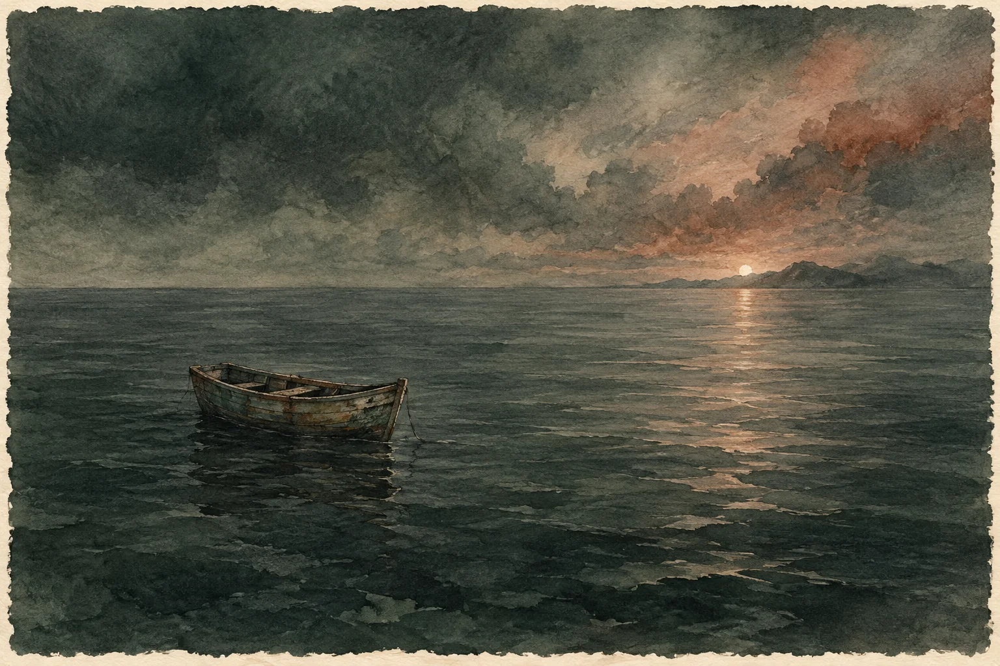

ମୂଳ କବିତା · English
Cast Away

I looked afar for a ray
but, there was no day
there was no night either,
only eternal season of rippled emotions
all around,
without him.
Here you wear invisibility
you reduce to nothingness,
a non-existing dust liberated from life,
cast away…
With soul captured into a lethal dark-box
and left to float for unknown,
shoring through the ocean’s force..
When abandoned to an isolated land of solitude
in shards,
Is it not justified to doubt each smile that flickers
in the sky above?
He built walls of reasonings,
I bagged my monologues,
he called it ‘self-imprisonment’,
I cultivated forced-silence.
I kept searching my world in him
till aim of my world was lost within him,
Bestowed with paramount navigational ado,
paired with hot blood and free wings;
love flew away.
With torn breaths and a stark hollow heart
we plunged back to very sinking ship,
we : me and my failed attempts of letting go.
Now he listens,
whenever I whisper his name,
at the gulf of stillness!
ମୂଳ ପ୍ରକାଶନ ପଢ଼ନ୍ତୁ ↗
କବିତାଗୁଡ଼ିକ ମୂଳ ଭାଷାରେ ରହିଛି। ଭାଷା ବଦଳାଇଲେ ୱେବ୍ସାଇଟ୍ର ପରିଚୟ ଓ ନିର୍ଦ୍ଦେଶ ବଦଳିବ।